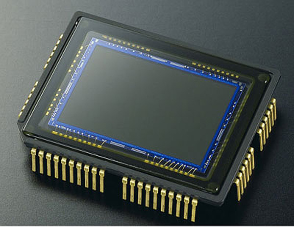
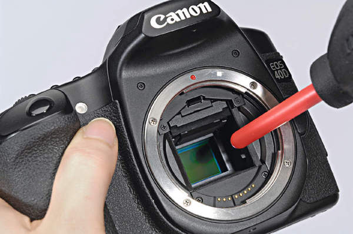
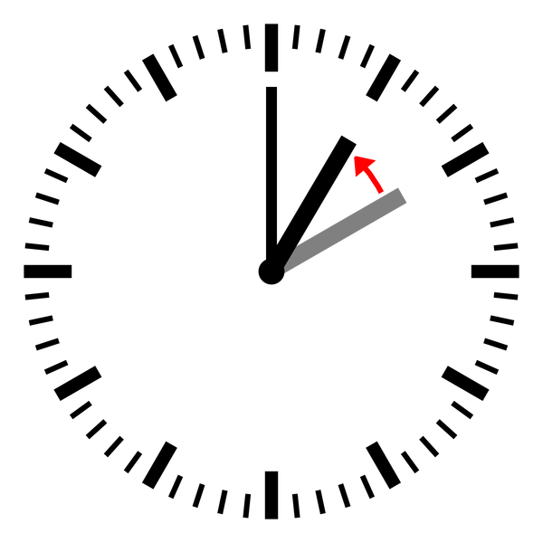
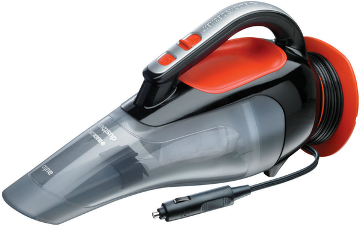
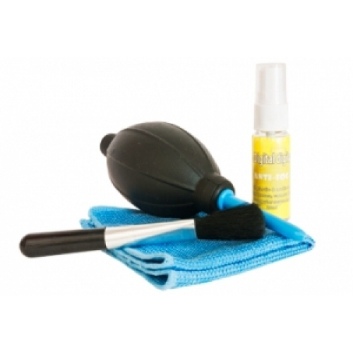
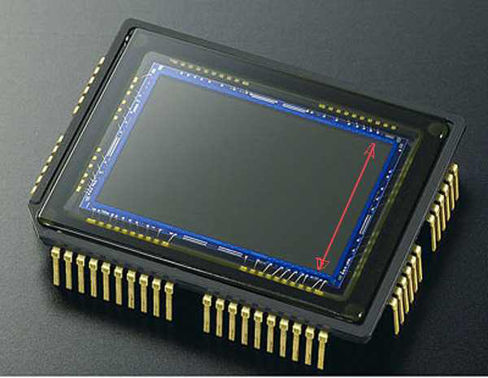
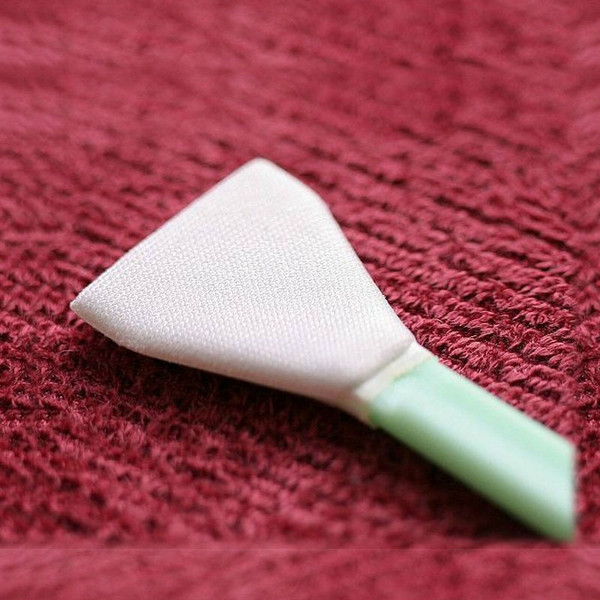
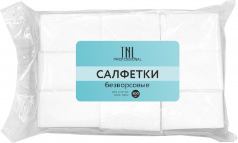
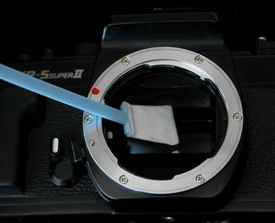

Напишу небольшой мануал по чистке матрицы фотоаппарата, опыт приобретал сам, прошел все круги ада)

Первое что попробовал это продуть грушей (строго в ванной комнате, пыли меньше всего там)

скажу сразу - если пыль там давненько, эффекта мало, можно дополнительную занести)
Так как ничего не вышло - пошел искать "мастера"
"Мастер" взял 1300 рублёв, сказал что "всё будет у порядке шеф!!" и сказал прийти через час..

Перезвонил сказал что всё в порядке, когда пришел я к нему и увидел свою "тушку" лежащую без объектива на столе далёком от чистоты - сразу всё понял. поставил при нём объектив, зажал диафрагму (не ему, хотя наверное стоило)), сделал снимок окна. И... УЖАС -
хотя было в два раза меньше), ну денег естественно я ему не дал, сказал пару слов о нашей не легкой жизни и пошел дальше.
Следующим этапом был пылесос -

вывод - только чтоб собрать "околоматричную" пыль из камеры, не более, (дальше байонета не ВТЫКАТЬ!!!)
Потом еще были насосы для матрасов, воздух сжаты в аэрозолях (НЕ ПРИМЕНЯТЬ, может быть влага и мусор)
Теперь к действенному способу: Нам понадобится 1. Набор для чистки оптики FUJIMI, из него нам особенно нужен этот чудо флакон (на нем должно быть написано - водный раствор изопропилового спирта!! внимательно читайте!)

2. одноразовые чайные ложки или кредитки (я использовал кредитку)
режем её по размеру ширины кропа

но на милиметр меньше! это важно. Должно получится примерно такое -

затем идёте в ближайший косметологический магазин и покупаете за 20 рублей безворсовые салфетки для маникюра) да,да, я когда спросил - девушка подозрительно так посмотрела) Если есть доступ к медецине - безворсовые хирургические салфетки. Я использовал первое.

затем вырезаете полоску салфетки, четко по ширине сенсора матрицы!, чтобы углы и края вычёсывались, делаете таких "швабр" сразу штуки три, (закрепить полоски можно с помощью двустороннего скотча) с полосками сразу, затем поднимаете зеркало (всё делать в ванной!!, одеть на голову чепчик медицинский, я взял у жены, от покраски волос остался чистый) кладём камеру на столик хорошо освещенный!, "пшикаем" немножко совсем! из флакончика на "швабру" проводим ей по сенсору слегка надавливая, из одного края к другому, потом обратно другой стороной "швабры". Жидкости должно быть СОВСЕМ чуть чуть!!.
Ставим объектив, зажимаем диафрагму, фоткаем окно, желательно в момент нажатия смазать рукой снимок, будет лучше видно пыль (если осталась). Если осталась, повторяем процедуру ТОЛЬКО НОВОЙ САЛФЕТКОЙ (заранее подготовленной "шваброй")

Скажу так, пользуюсь мануальными объективами постоянно, не всегда есть возможность правильно (без пыли) поменять объектив, способ рабочий на 100%, перед этим чем только не пробовал) по поводу "поцарапать сенсор", циркуль не суйте и всё будет в порядке)
И самое главное - перед чисткой сенсора, вычистить всю тушку внутри и снаружи, продуть фотогрушей обязательно!!
Тереть на сухую "лензпеном" не советую, есть шанс поцарапать (небольшой но есть)
Силиконовую присоску - ну тоже как то не очень, как по мне)
Для себя я выбрал этот способ и другого теперь не надо)
А Вам выбирать конечно самим)
По стоимости все это (лет на дцать) вышло 550 рублей.